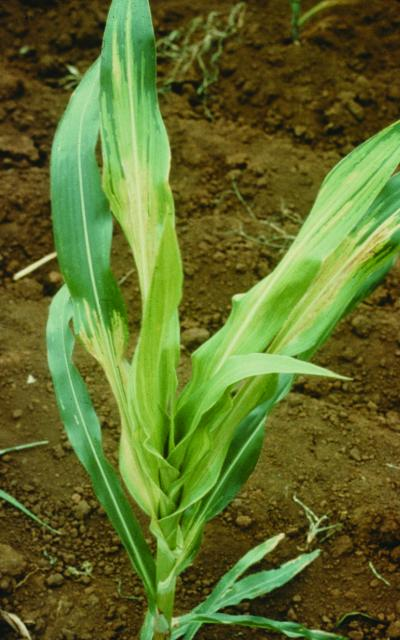

| Home |
| MAIZE |
mAJOR DISEASES |
| 1. Downy Mildew |
| 2. Sorghum downy mildew |
| 3. Phlippine downy mildew |
| 4. Crazy top |
| 5. Leaf blight |
| 6. Rust |
| 7. Head smut |
| 8. Charcoal rot |
mAJOR DISEASES |
| 1. Bacterial Stalk rot |
| 2. Mosaic |
| 3. Brown spot |
| Questions |
| Download Notes |
MAIZE :: MAJOR DISEASES :: PHLIPPINE DOWNY MILDEW
Phlippine downy mildew - Peronosclerospora philippinensis
|  |